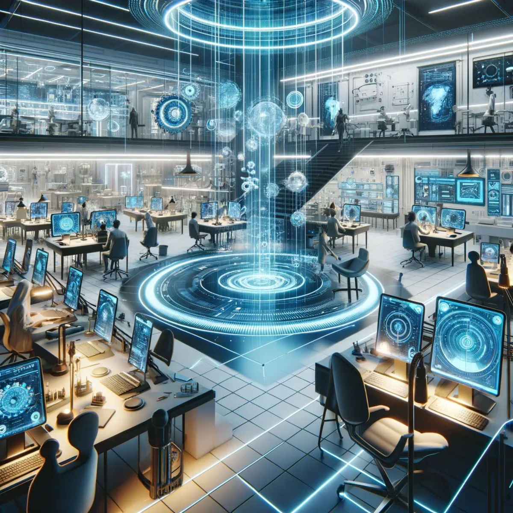

Pathways / Frontiers
Aura Capsule Hotels
AI- and XR-enabled sleep pods, an on-site innovation lab, and robotic convenience, all woven into the smart city around them.

Sleep in the future, awaken to innovation
Futuristic Pods: Live the Sci-Fi Dream
Imagine stepping into the realm of science fiction made reality with our Futuristic Pod Hotel concept. Each capsule is a sanctuary of innovation, designed not just for sleep, but for an immersive journey into the future. Equipped with cutting-edge AI and XR technologies, these pods offer you a personalised escape, adapting to your preferences for entertainment, relaxation, and even productivity. The interior of each pod is a marvel of ergonomic design and technological integration, offering seamless access to multiverses of digital experiences. From tranquil meditation landscapes to thrilling interstellar adventures, only limited by your imagination.

Where imagination meets implementation
Integrated Innovation Labs: Crafting Tomorrow
Dive into the heart of creativity at our Capsule Hotels Innovation Lab, a collaborative playground for tech enthusiasts and visionary thinkers. This space is designed to spark inspiration and foster the development of ground-breaking ideas that shape the future of smart cities and beyond. Equipped with the latest tech tools and resources, the lab invites guests to experiment, prototype, and bring their visionary concepts to life. Beyond serving as a think tank, the Innovation Lab acts as a bridge between theory and practice, providing a platform for workshops, hackathons, and showcases. Here, collaboration is the currency, and every interaction is an opportunity to learn, share, and contribute to a collective vision of the future.

Experience the ease of automation
Automated Convenience: Effortless Living
Embrace the pinnacle of convenience in our automated Capsule Hotel, where technology simplifies every aspect of your stay. From check-in to check-out, our systems are designed for seamless interaction, allowing you to control your environment, request services, and even receive personalised recommendations with just a few taps or voice commands. Our hotel goes beyond traditional automation, integrating intelligent drones for rapid rooftop deliveries around the city and ground-based robotic assistants of various designs, including humanoids, that ensure your needs are met swiftly and efficiently. This blend of AI and robotics transforms everyday tasks into experiences of futuristic luxury and ease.

Your stay, the smart way
Smart City Synergy: Integrated Innovation
Our capsule hotel isn't just a place to stay; it is an integral node in any smart city's vibrant networks. Integrated seamlessly with the city's tech infrastructure, the hotels offer unique experiences where your personal space is as connected as you are, optimising convenience and efficiency. From smart climate control to automated delivery services, the hotel's systems are designed to anticipate and cater to your needs and those of the city itself. The synergy within the smart city lets you control various aspects of your environment, both within and outside the pod, ensuring a seamless, hassle-free experience that epitomises modern luxury while travelling on a budget.
Keep exploring